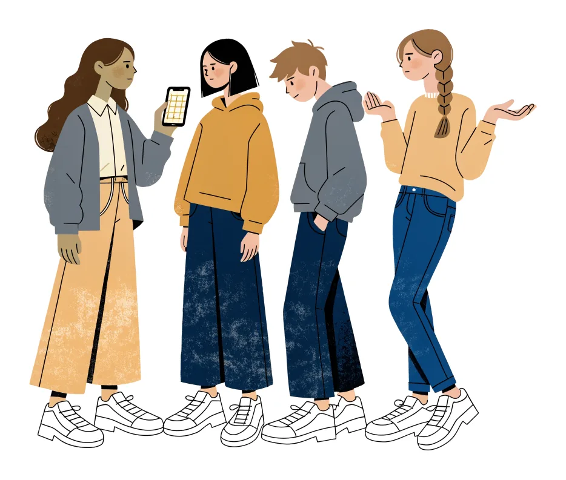
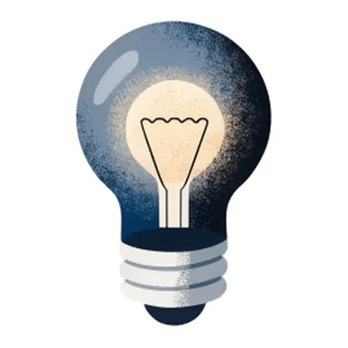
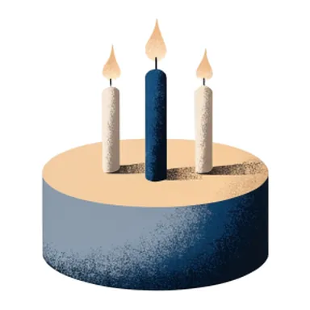
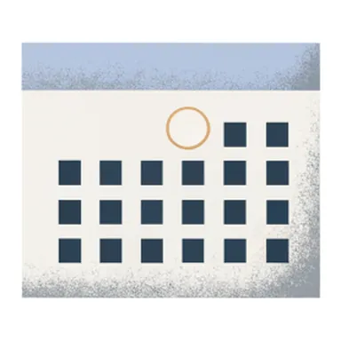
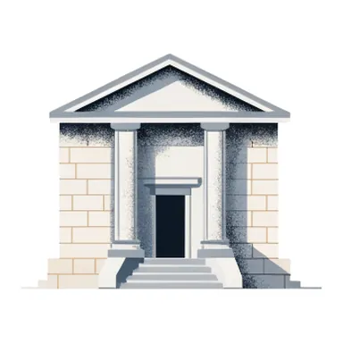
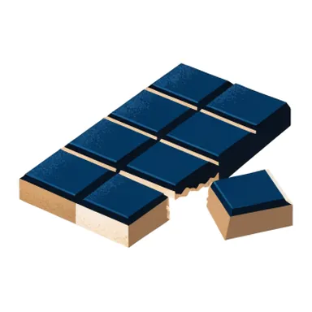

먼저 생각해 보세요.
Ich kann am Samstag kommen. 이 문장에서 kommen은 어디에 있나요?
kann이 둘째 자리에 오고 kommen은 맨 끝으로 가요. 이 과에서 배워요.

쉬는 시간이에요. Elif가 주말에 같이 놀러 가자고 해요. 그런데 친구들마다 되는 날이 달라요.
눌러서 들어 보세요.
먼저 생각해 보세요.
Ich kann am Samstag kommen. 이 문장에서 kommen은 어디에 있나요?
kann이 둘째 자리에 오고 kommen은 맨 끝으로 가요. 이 과에서 배워요.
Lektion 2의 낱말 다섯 개를 다시 떠올려 보세요.
문법 können, müssen, wollen, Satzklammer, Datum (am ersten Mai)
이 과를 마치면 친구와 약속을 잡고, 안 될 때는 이유를 말할 수 있어요.
쉬는 시간, Elif가 주말 계획을 꺼내요.
들으면서 찾아보세요. 친구들은 무슨 요일에 박물관에 가나요?
일요일, 박물관 앞이에요. 친구들을 기다리며 Elif와 Yuna가 이야기해요.
들으면서 찾아보세요. Yuna의 생일은 언제인가요?
두 대화를 듣고 답하세요.
친구들은 언제 박물관에 가나요?
Emma kann am Samstag kommen.
Am Samstag kann ich leider nicht. 할머니를 뵈러 가야 해요.
Lukas muss am Sonntag für den Test lernen.
Yuna의 생일은 언제인가요?
Emma의 생일은 언제인가요?
Yuna는 내일 무엇을 해야 하나요?
낱말 21개예요. 낱말이나 예문 앞의 단추를 누르면 소리가 나요. 명사는 der, die, das를 색으로 구분했어요.
können (du kannst, er kann) ~할 수 있다
Ich kann am Samstag kommen.나는 토요일에 갈 수 있어요.
müssen (du musst, er muss) ~해야 한다
Ich muss für den Test lernen.나는 시험공부를 해야 해요.
wollen (du willst, er will) ~하고 싶다, ~하려고 하다
Wir wollen ins Museum gehen.우리는 박물관에 가려고 해요.
besuchen 찾아가다, 방문하다
Ich besuche meine Oma.나는 할머니를 뵈러 가요.
vielleicht 아마, 어쩌면
Vielleicht kann ich am Nachmittag kommen.어쩌면 오후에는 갈 수 있어요.
leider 아쉽게도
Ich kann leider nicht.아쉽지만 안 돼요.
schade 아쉬운, 안타까운
Das ist schade.그것참 아쉬워요.

die Idee, die Ideen 생각, 아이디어
Gute Idee!좋은 생각이야!
frei 시간이 비어 있는, 자유로운
Am Sonntag habe ich frei.일요일에는 시간이 있어요.
genau 맞아, 정확히
Ja, genau.응, 맞아.
Wo treffen wir uns? 어디에서 만날까?
Wo treffen wir uns? Am Bahnhof?어디에서 만날까? 역에서?
Bis Samstag! 토요일에 봐!
Tschüss! Bis Samstag!안녕! 토요일에 봐!
morgen 내일
Hast du morgen Zeit?내일 시간 있어?
das Wochenende, die Wochenenden 주말
Was macht ihr am Wochenende?너희 주말에 뭐 해?

der Geburtstag, die Geburtstage 생일
Wann hast du Geburtstag?생일이 언제야?
der Monat, die Monate 달, 월
Der Monat hat dreißig Tage.그 달은 30일이에요.

der Termin, die Termine 예약, 일정
Ich habe einen Termin.나는 일정이 있어요.
der Test, die Tests 시험, 평가
Der Test ist am Montag.시험은 월요일이에요.

das Museum, die Museen 박물관
Das Museum ist sehr interessant.그 박물관은 아주 재미있어요.
die Party, die Partys 파티
Emma will eine Party machen.Emma는 파티를 하고 싶어 해요.

die Schokolade, die Schokoladen 초콜릿
Ich esse gern Schokolade.나는 초콜릿을 즐겨 먹어요.
이 과의 낱말로 여덟 문제를 풀어요.
달 이름은 모두 der 명사예요. 줄을 누르면 소리가 나요.
날짜는 '몇 번째 날'로 말해요. 숫자에 -te를 붙이고, 20부터는 -ste를 붙여요. '~일에'는 am …ten이라고 해요.
예문을 보고 답해 보세요.
ich kann, er kann. 두 형태는 어떤 점이 같나요?
규칙
können, müssen, wollen은 ich와 er, sie, es의 형태가 같고 끝에 아무것도 붙지 않아요. 단수에서는 모음도 바뀌어요.
| können | müssen | wollen | |
|---|---|---|---|
| ich | kann | muss | will |
| du | kannst | musst | willst |
| er, sie, es | kann | muss | will |
| wir | können | müssen | wollen |
| ihr | könnt | müsst | wollt |
| sie, Sie | können | müssen | wollen |
주의 wollen은 강하게 들릴 수 있어요. 가게에서 주문할 때는 Ich will … 대신 Ich möchte …라고 해요.
예문을 보고 답해 보세요.
Ich kann am Samstag kommen. 두 동사 kann과 kommen은 어디에 있나요?
규칙
können, müssen, wollen은 주어에 맞게 바꿔서 둘째 자리에 두고, 무엇을 하는지 나타내는 동사는 원형 그대로 문장 맨 끝에 둬요. 두 동사가 나머지 말을 감싸는 모양이에요. 나뉘는 동사도 맨 끝에서는 붙여 써요.
| 1 | 2 | … | 맨 끝 |
|---|---|---|---|
| Ich | kann | am Samstag | kommen. |
| Am Sonntag | muss | ich für den Test | lernen. |
| Du | musst | Jun morgen | anrufen. |
| (질문) | Wollen | wir ins Museum | gehen? |
주의 nicht은 보통 맨 끝의 동사 앞에 와요. Ich kann am Samstag nicht kommen.
예문을 보고 답해 보세요.
'3월 12일에'라고 말할 때 zwölf 뒤에 무엇이 붙었나요?
규칙
날짜는 '몇 번째'로 말해요. 19까지는 숫자에 -te, 20부터는 -ste를 붙여요. '오늘은 ~일이다'는 der …te, '~일에'는 am …ten이라고 해요. 숫자로 쓸 때는 뒤에 점을 찍어요.
| 쓰기 | Heute ist … | Wann? Am … |
|---|---|---|
| 1. Mai | der erste Mai | am ersten Mai |
| 3. August | der dritte August | am dritten August |
| 7. Juli | der siebte Juli | am siebten Juli |
| 12. März | der zwölfte März | am zwölften März |
| 20. Juni | der zwanzigste Juni | am zwanzigsten Juni |
주의 erste(1), dritte(3), siebte(7), achte(8)는 모양이 조금 달라요. 독일에서는 날짜를 일, 월, 연도 순서로 써요. 2026년 3월 12일은 12.3.2026이에요.
Lukas가 Emma에게 전화해요. 듣고 답하세요.
Am Telefon
Lukas Hallo, Emma! Hast du morgen Zeit? Wollen wir Fußball spielen?
Emma Morgen kann ich leider nicht. Ich habe einen Termin.
Lukas Schade. Und am Freitag?
Emma Am Freitag muss ich lernen. Aber am Samstag habe ich frei.
Lukas Super! Dann treffen wir uns am Samstag um drei im Park.
Emma Ja, gern! Bis Samstag!
Lukas는 무엇을 하고 싶어 하나요?
Emma hat morgen Zeit.
Morgen kann ich leider nicht. Ich habe einen Termin.
Was muss Emma am Freitag machen?
두 사람은 언제 만나나요?
날짜를 듣고 고르세요.
오늘은 며칠인가요?
Heute ist der dritte Mai.
생일은 언제인가요?
Ich habe am siebten Juli Geburtstag.
시험은 언제인가요?
Der Test ist am zwanzigsten Juni.
언제 만나나요?
Wir treffen uns am ersten Dezember.
Elif와 Yuna의 메시지를 읽고 답하세요.
Freitag, 17 Uhr
Hallo Yuna! Wir wollen morgen ins Kino gehen. Kommst du mit?
Morgen? Am Nachmittag muss ich mit Emma einkaufen.
Und am Abend? Der Film fängt um sieben an.
Am Abend habe ich Zeit. Aber ich muss um zehn zu Hause sein.
Kein Problem. Der Film ist um neun aus.
Super! Wo treffen wir uns?
Um halb sieben am Kino. Lukas kommt auch.
Yuna kann am Nachmittag ins Kino gehen.
Am Nachmittag muss ich mit Emma einkaufen.
Wann fängt der Film an?
Yuna는 몇 시까지 집에 가야 하나요?
Ich muss um zehn zu Hause sein. zu Hause는 '집에'라는 뜻이에요.
친구들은 어디에서 만나나요?
주어에 맞는 형태를 고르세요.
Ich am Samstag kommen.
du morgen kommen?
Lukas für den Test lernen.
Wir ins Museum gehen.
Emma eine Party machen.
Ihr ein Ticket kaufen.
한국어 뜻에 맞는 동사를 고르세요.
Ich habe keine Zeit. Ich Hausaufgaben machen.
시간이 없어요. 숙제를 해야 해요.
Yuna sehr gut tanzen.
Yuna는 춤을 아주 잘 출 수 있어요.
Ich habe Hunger. Ich eine Brezel essen.
배고파요. 브레첼을 먹고 싶어요.
Am Sonntag ich leider nicht kommen.
일요일에는 아쉽지만 갈 수 없어요.
Der Bus kommt! Wir jetzt gehen.
버스가 와요! 우리는 지금 가야 해요.
낱말을 순서대로 눌러 문장을 만드세요.
나는 토요일에 갈 수 있어.
우리는 영화관에 가려고 해.
나는 할머니를 뵈러 가야 해.
너 내일 올 수 있어?
너는 Jun에게 전화해야 해.
날짜를 독일어로 쓰세요.
1. Mai = am Mai
3. August = am August
7. Juli = am Juli
12. März = am März
20. Juni = am Juni
질문과 대답을 짝지으세요.
듣고 그대로 써 보세요.
Hast du am Sonntag Zeit? 일요일에 시간 있어?
Am Samstag kann ich leider nicht. 토요일에는 아쉽지만 안 돼.
Ich muss für den Test lernen. 나는 시험공부를 해야 해.
Hast du am Samstag Zeit? 토요일에 시간 있어?
Wollen wir ins Kino gehen? 우리 영화관에 갈까?
Kommst du mit? 같이 갈래?
Ja, gern! 응, 좋아!
Gute Idee! 좋은 생각이야!
Ja, ich kann kommen. 응, 갈 수 있어.
Ich kann leider nicht. 아쉽지만 안 돼.
Ich muss lernen. 공부해야 해.
Vielleicht am Sonntag? 일요일은 어때?
Wann treffen wir uns? / Wo treffen wir uns? 언제 만날까? / 어디에서 만날까?
Um drei am Kino. 세 시에 영화관 앞에서.
Bis Samstag! 토요일에 봐!
대화 A에서 역할을 하나 고르세요. 상대의 말은 음성으로 나오고, 내 차례에는 직접 말해요.
내 생일, 주말에 하고 싶은 일, 해야 하는 일을 적으세요. 완성된 문장을 소리 내어 읽어 보세요.
Ich habe am zwölften März Geburtstag.
Am Wochenende will ich ins Kino gehen.
Aber ich muss Hausaufgaben machen.
Eine Nachricht
친구가 토요일에 영화를 보러 가자고 했어요. 토요일에 안 되는 이유를 말하고 다른 날을 제안하는 답장을 써 보세요.
Hallo Elif! Danke! Am Samstag kann ich leider nicht kommen. Ich muss meine Oma besuchen. Hast du am Sonntag Zeit? Wollen wir um drei ins Kino gehen? Wir treffen uns am Bahnhof. Bis Sonntag!
다 쓴 뒤에 확인해 보세요.
Ich kann einen Vorschlag machen.같이 하자고 제안할 수 있어요.
Ich kann zusagen und absagen.좋다고 하거나 안 된다고 말할 수 있어요.
Ich kann das Datum sagen.날짜를 말할 수 있어요.